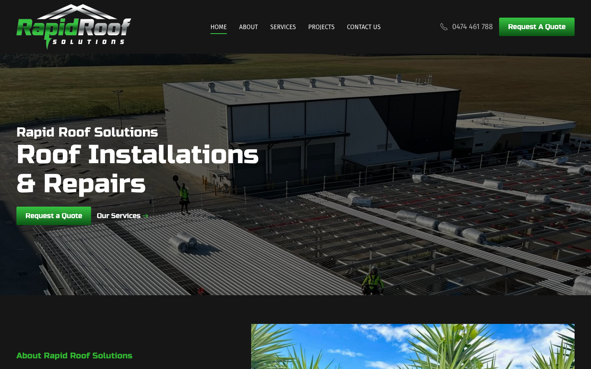

57/100 · moderate_candidate · 行业：roofer · 地区：Brisbane · Google 评价：5★ （0 条）
投入分级： C 批量轻触 — 模板邮件 + 报告
PDF 链接，无主动跟进
触发依据： - C · moderate_candidate · audit 57 · 0 评论 5★ (未达 B 标准)
下一步行动： 标准模板邮件 + master.md PDF 链接，无主动跟进。等客户回复触发后再投入。
线索来源 · 联系开场可用: - 来源:
Google Maps (gosom 抓取) - 搜索关键词:
roofer in brisbane - 首次发现: 2026-05-14
- Batch:
pipe-roofer-brisbane-202605141830
审计结论： audit_score=57 → moderate_candidate · weakest: gbp 20, seo 34
independent_https_site
慢速 4G 加载实景视频（1.6 Mbps · 150ms 延迟 · 4× CPU 节流，模拟真实手机访客的体验）：
The site has a clear roofing message and visible quote buttons, but the first screen feels generic and lacks immediate proof that this is a trusted Brisbane roofer.
新鲜度 6/10 · 信任度 6/10 ·
转化准备度 7/10 · 设计年代
slightly_outdated
值得保留的优点： - The main headline clearly says ‘Roof Installations & Repairs’, so the core service is immediately understandable. - Green quote buttons are visible on both desktop and mobile above the fold. - The mobile layout keeps the primary call-to-action sticky at the bottom, which is useful for phone-based local searches.
技术事实
On the mobile screenshot, the bottom sticky bar shows two green buttons, ‘Contact Us’ and ‘Call Now’, but the actual phone number is not visible anywhere in the first screen.
普通话翻译
手机页面第一屏看不到真实电话号码，只看到“Call Now”按钮。
对客户的影响
本地客户通常是在手机上找屋顶维修，很多人会直接打电话。若号码不马上出现，访客可能几秒内回到Google，点竞争对手的电话。
正确长啥样
Mobile header or sticky bar shows a tap-to-call button with the phone number, such as ‘Call 0474 461 788’, visible without scrolling.
Redesign 怎么改
Replace the generic mobile ‘Call Now’ label with ‘Call 0474 461 788’ and keep it fixed at the bottom; also add a small phone icon and number in the mobile header if space allows.
技术事实
0 reviews
普通话翻译
你的 Google 评价数量低于同行平均水平。
对客户的影响
本地搜索排名信号之一就是评价数量；不光是分数，连”有多少条”都算。短期可以做的：每个完工的客户群发一条「点评一下吧」的 SMS。
技术事实
title=‘## Rapid Roof Solutions’ contains-name=true contains-niche=false
普通话翻译
你网站的浏览器标签 title 没把业务名字 + 服务关键词写清楚（比如该写「Rapid Roof Solutions - roofer Brisbane」，但目前是泛泛一句）。
对客户的影响
Google 搜索结果里展示的就是这个 title。写不清楚 = 排名靠后 + 即使排上来客户也不知道是不是匹配的服务。SEO 最便宜的修复，但很多本地企业完全没做。
技术事实
no LocalBusiness JSON-LD
普通话翻译
网站没有 LocalBusiness JSON-LD 结构化数据（让 Google / AI 知道你是本地企业、地址、电话、营业时间的标准格式）。
对客户的影响
Google「附近的服务」「Knowledge Panel」「AI Overview」都依赖这类结构化数据。没有 = 即使排名上去也不会出现在右侧 Knowledge Panel 或地图卡片里 — 错失高转化的展示位。AI agent / ChatGPT 引用本地商家时也是基于这些数据。
技术事实
The desktop and mobile hero areas show the logo, headline, roof image, and quote buttons, but no Google rating, review count, licence, insurance, years in business, or Brisbane service-area proof is visible.
普通话翻译
首页第一眼没有看到评分、评价数量、执照、保险或布里斯班本地服务证明。
对客户的影响
修屋顶金额高、风险高，客户会先找“看起来靠谱”的公司。访客通常在8秒内形成第一印象，缺少信任信息会让报价咨询减少。
正确长啥样
The first screen includes a compact trust row under the headline: Google stars, review count, licensed and insured, Brisbane service area, and emergency repair availability if true.
Redesign 怎么改
Add a trust strip directly below the hero headline and above the CTA buttons with 3-4 verified proof points, using small icons and plain labels.
技术事实
The desktop hero image is a dark aerial view of a large commercial roof with tiny workers and no clear close-up of finished roofing quality or a local home.
普通话翻译
桌面首图像大型工地航拍，距离太远，看不出屋顶施工质量，也不像客户自己的房子。
对客户的影响
客户会下意识找“这家公司能解决我的问题”的证据。图片太泛，会让住宅客户觉得不匹配，从而少点报价。
正确长啥样
Hero image shows a bright Brisbane residential or commercial roof project with visible finished roof detail, workers, or before-and-after context.
Redesign 怎么改
Replace or rotate the desktop hero with a sharper project photo that shows completed roof work; add a small caption such as ‘Roof repairs and replacements across Brisbane’.
技术事实
On desktop, the Rapid Roof Solutions logo takes up a large amount of vertical space in the black header, while the phone number and quote button sit smaller on the right.
普通话翻译
页头Logo太抢眼，反而让电话和报价按钮没那么突出。
对客户的影响
本地服务网站最重要的是让客户快速联系。联系入口不够突出，会降低来电和询价。
正确长啥样
Header uses a smaller logo, clear navigation, prominent phone number, and one high-contrast quote button with balanced spacing.
Redesign 怎么改
Reduce the desktop logo height, tighten the header, and give the phone number equal visual weight to the quote button.
PSI 给的是宏观分数，下面是具体可改的两块：图片格式与 tracker 脚本。
总评： 部分优化 — 还有空间
具体问题： - [minor] 21 张图仍是 JPG/PNG，建议转 WebP - [minor] 21/21 张图无响应式 srcset — 移动端浪费带宽 - [major] 21/21 张图缺 alt 文字 — 影响 SEO + 可访问性 + AI 抓取
已识别的 tracker：
| 工具 | 类型 | 请求数 | 字节 |
|---|---|---|---|
| Google Tag Manager | analytics | 4 | 627.5 KB |
| Google Analytics | analytics | 2 | 0.0 KB |
观察： 6 个 tracker 合计加载了 628 KB —— 这些都是阻塞主线程的脚本，是性能 + 隐私双角度的销售切入点。redesign 时可以建议清理不再使用的 tracker。
客户最常担心的问题：「我重做网站，会不会丢掉 Google 排名？」这一段直接回答。
https://rapidroofsolutions.com.au/sitemap_index.xml页面分类：
| 类型 | 数量 |
|---|---|
| 首页 | 1 |
| 联系 / 报价 | 1 |
| service_area_page | 1 |
| 作品集 / 案例 | 1 |
| 关于 / 团队 | 1 |
Sitemap lastmod 跨度： 最旧 2023-02-27 → 最新 2023-08-15
Redirect 计划承诺： redesign 上线时我们会附一份 5 条 1:1 redirect 表（旧 URL → 新 URL），保证 Google 已经索引的页面权重无损迁移。已经在 Google 第一二页的关键词不会丢。
长尾覆盖： 无 — 没有服务专项页面，redesign 时是关键补点
现有服务×区域页样本： /services/
关键发现： 客户的网站超过一年没动过。redesign 之后我们也建议帮忙建立最低限度的内容更新节奏（每月 1 篇 case study 即可），否则 AI / Google 都会判定网站「死站」。
none (全无配置 —
邮件营销 / cold outreach 几乎不可能投递成功)这是后续 「Social Media Management 月度包」 或 「Cold Outreach 启动包」 的前置条件 —— 邮件 DNS 没修好，发出去的邮件全进垃圾箱。redesign 时一并处理。
从网站源码识别出来的工具，能帮我们判断这位客户的数字成熟度。
数字成熟度打分： 2 / 6 （中 — 已有基础设施，缺少深度运营）
客户可能有数月 / 数年的历史数据 + 广告投放受众 sit 在这些 ID 上面。重做时必须用同一套 ID 重新接进新网站，否则等于清零所有累积。
我们 redesign 交付清单会把这些列为「必须 setup 项」。
本地服务的客户在掏钱之前会查这些凭证。缺失 = 客户跳到下一家。
信任分： 45/100
GEO = Generative Engine Optimization。ChatGPT、Perplexity、Google AI Overviews 这些 AI 搜索产品不像传统搜索引擎那样按”关键词排名”工作，它们直接抓取结构化数据并把答案合成给用户。如果你的网站在 AI 抓取这一块做得不到位，等于在生成式搜索时代隐身。
AI 可发现性总分： 40 / 100 — AI agent 抓取部分支持，但关键 schema / 凭证 / FAQ 缺失
localbusiness_schema — Organization JSON-LD
present (LocalBusiness preferred for local services)breadcrumb_schema — BreadcrumbList JSON-LD
presenteeat_business_credentials — 2/4 credentials in
copy: ABN, license/QBCCjsonld_at_least_one — 5 JSON-LD block(s)
detected on pagellms_txt_present (5 分) — no /llms.txt at
standard pathai_bot_robots_policy (5 分) — robots.txt has no
explicit policy for AI crawlers (GPTBot/ClaudeBot/etc)service_schema (10 分) — no Service JSON-LDfaqpage_schema (10 分) — no FAQPage JSON-LD
(loses AI Overview / featured snippet eligibility)aggregaterating_schema (5 分) — no
AggregateRating JSON-LD (★ rating not shown in search snippets)semantic_landmarks (10 分) — 1 semantic
landmarks present: <navfaq_qa_pattern (10 分) — 0 question-style
heading(s) found (Q&A format helps AI extraction)eeat_warranty_trust (5 分) — no
warranty/guarantee in copy销售切入： 「ChatGPT 现在每月 30 亿次搜索，本地服务用户问『Brisbane 哪家屋顶公司靠谱』，AI 回答时只引用结构化数据完整的网站。你目前在这个新阵地的得分是 40/100。」
注：这一段只给运营内部看，不进入客户报告。 用来判断这个 lead 是不是匹配我们「小网站 / 多批量 / 快上线」的产品定位。
small —
小型，符合我们标准产品包定位报价以上方 建议报价 为准（来自 entity.grade.recommended_pricing / PRODUCT_TIER_TABLE）。本段只用来判断 lead 是否匹配产品定位，不竞争报价。
触发依据： - 已部署 2 个追踪工具
redesign 是一次性收入。以下是基于这个客户当前现状自动识别的持续性服务包机会，可以在 redesign 提案签字时一并捆绑进去。
触发依据： 网站没有 blog 板块 — 没有内容营销基础设施，长尾 SEO 流量为零。
包内容： 每月 2 篇 SEO-optimized blog（800-1,200 字）+ 每季度 1 篇 case study（含 before/after 图）+ 关键词研究报告。
月度费用区间： $400-800/月
销售切入： 「ChatGPT 时代搜索引擎更偏爱有「专家深度内容」的网站。你目前的网站只有服务介绍页 — AI 可引用的素材几乎为零。」
-2026-05-11-v1codex_cliGoogle Places · most_relevant (max 5)